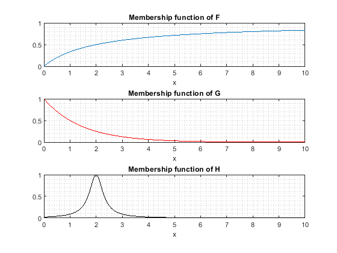
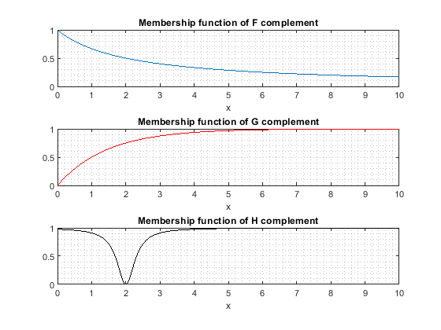
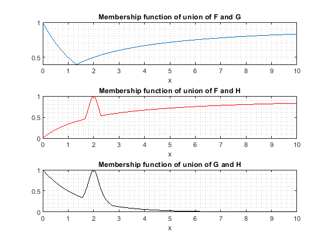
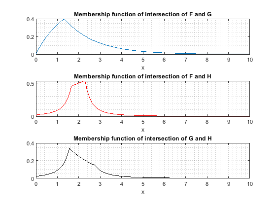
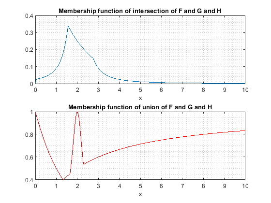
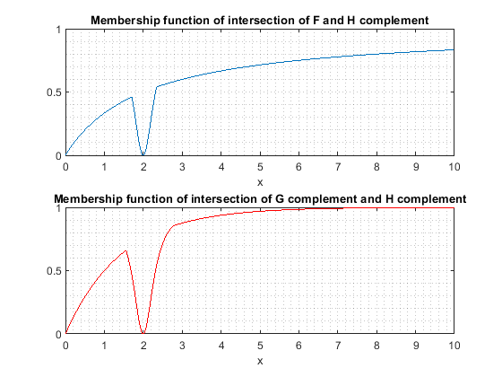

Computational Intelligence Lab Report - Lab 10 - Prof. Amini
Seyed Mohammadsaleh Mirzatabatabaei - 9623105
Contents
Clear recent data
clear; close all; clc;
Membership functions
x = 0 : 0.01 : 10; F = x ./ (x + 2); G = 2 .^ (-x); H = 1 ./ (1 + 10 * ((x - 2) .^ 2));
plot F and G and H membership functions
figure; subplot(3, 1, 1); plot(x, F); grid minor; title('Membership function of F'); xlabel('x'); subplot(3, 1, 2); plot(x, G, 'r'); grid minor; title('Membership function of G'); xlabel('x'); subplot(3, 1, 3); plot(x, H, 'k'); grid minor; title('Membership function of H'); xlabel('x');
plot complements membership functions
figure; subplot(3, 1, 1); plot(x, 1 - F); grid minor; title('Membership function of F complement'); xlabel('x'); subplot(3, 1, 2); plot(x, 1 - G, 'r'); grid minor; title('Membership function of G complement'); xlabel('x'); subplot(3, 1, 3); plot(x, 1 - H, 'k'); grid minor; title('Membership function of H complement'); xlabel('x');
plot union membership functions
figure; subplot(3, 1, 1); plot(x, max(F, G)); grid minor; title('Membership function of union of F and G'); xlabel('x'); subplot(3, 1, 2); plot(x, max(F, H), 'r'); grid minor; title('Membership function of union of F and H'); xlabel('x'); subplot(3, 1, 3); plot(x, max(G, H), 'k'); grid minor; title('Membership function of union of G and H'); xlabel('x');
plot intersection membership functions
figure; subplot(3, 1, 1); plot(x, min(F, G)); grid minor; title('Membership function of intersection of F and G'); xlabel('x'); subplot(3, 1, 2); plot(x, min(F, H), 'r'); grid minor; title('Membership function of intersection of F and H'); xlabel('x'); subplot(3, 1, 3); plot(x, min(G, H), 'k'); grid minor; title('Membership function of intersection of G and H'); xlabel('x');
plot part 4
figure; subplot(2, 1, 1); plot(x, min(min(F, H), G)); grid minor; title('Membership function of intersection of F and G and H'); xlabel('x'); subplot(2, 1, 2); plot(x, max(max(F, H), G), 'r'); grid minor; title('Membership function of union of F and G and H'); xlabel('x');
plot part 5
figure; subplot(2, 1, 1); plot(x, min(F, 1 - H)); grid minor; title('Membership function of intersection of F and H complement'); xlabel('x'); subplot(2, 1, 2); plot(x, min(1 - G, 1 - H), 'r'); grid minor; title('Membership function of intersection of G complement and H complement'); xlabel('x');